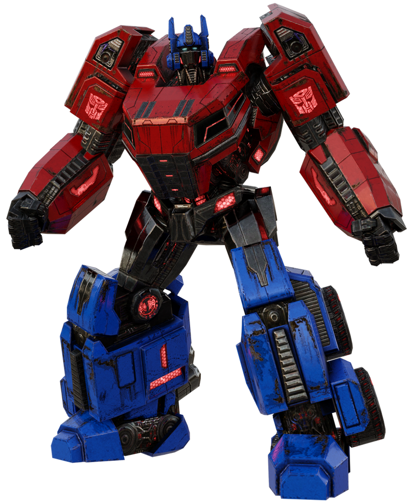

War for Cybertron (2010)
In the waning days of the war for Cybertron, Optimus spotted a little yellow Autobot in trouble, and defeated the surrounding drone forces. Ratchet arrived on the scene, and Optimus helped up the Autobot scout, who revealed his name was Bumblebee. Bumblebee informed Optimus that the Decepticons had taken control of communication relays, so that the only way to contact Optimus was by messenger. He also informed Optimus that their leader, Zeta Prime, was dead. Optimus suspected Megatron's hand, and was informed by Bumblebee that the Autobot High Council had gone into hiding because of this. Optimus believed that the Council would emerge during a safer time, and formed a team with Bumblebee and Ratchet. They drove to the Decagon, where they found Ironhide battling the forces of Starscream. After assisting him in defeating Starscream's army, they confronted Starscream himself within the Decagon. After the trio combated and drove off Starscream, a hologram of Zeta Prime's face appeared in the center of the room, stating that he is being held in the Kaon prison complex. Optimus took Bumblebee and Sideswipe to the Kaon prison, allowing themselves to be captured so that they could infiltrate the facility. The Decepticons prepared to execute them, but Air Raid lent a hand so they could escape, though he himself was captured. While sneaking through the corridors, the three managed to free Air Raid, Arcee, and others. They continued through the hallways, and finally located the room where Zeta is being held, only to face Soundwave. The Decepticon cowered behind a force field, sending Frenzy, Rumble, and Laserbeak out to fight for him, only venturing out to administer needed repairs to his minions. As Soundwave's energy became low, he attempted to drain Zeta Prime, only to be interrupted by Optimus, who took a shot meant for Zeta. Though Soundwave and his minions retreated, the damage was done, and Zeta Prime died before Optimus could free him. Optimus brought Zeta's corpse to the site of the hiding High Council, where he lay the dead body in the center of the room. Optimus stated that the Autobots craved their guidance, but the Council stated that their mission was to choose the Primes, not to lead them. They then told him that Optimus himself is a Prime, and that he had changed the lives around him. Optimus was then told that Megatron had corrupted the core of Cybertron, and that he was the one that could remove this blight. He took this burden and responsibility, then was told by the Council that he was now Optimus Prime, the last Prime.
